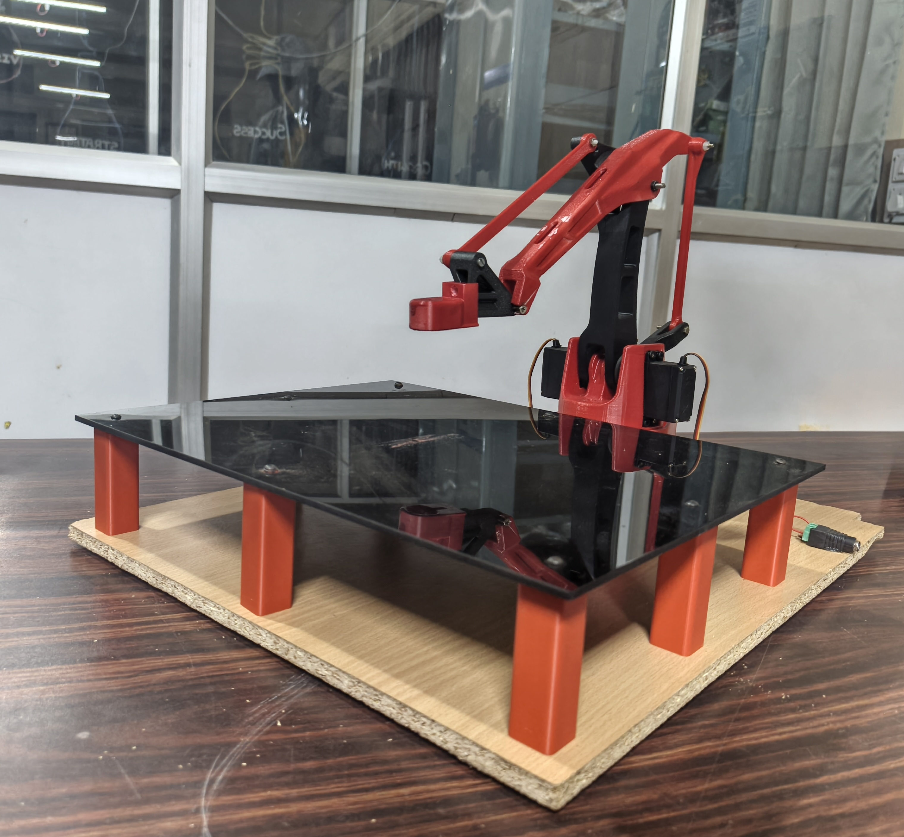
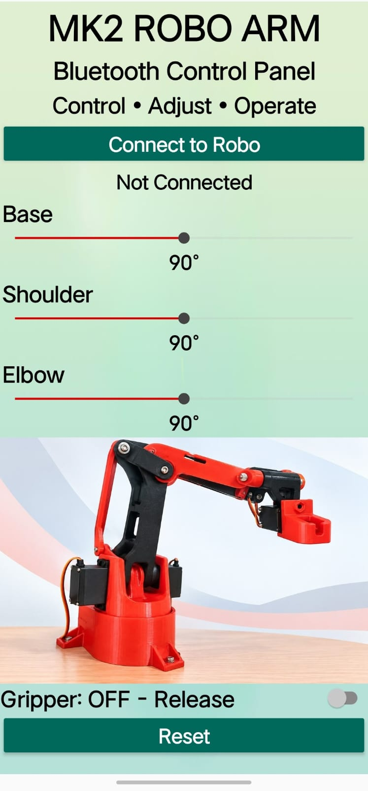

PROJECT 02
Automated Material Handling Robotic Arm
A robotic arm prototype developed to demonstrate controlled movement, object handling and automation using electronic control and servo-based actuation.

Project Overview
The Automated Material Handling Robotic Arm is a practical engineering project developed to demonstrate the basic concepts of robotics and automation. The prototype uses controlled joint movements to position its arm and operate a gripper for handling objects.
The project combines mechanical assembly, electronic interfacing and programming. It provides practical experience in controlling multiple movements and understanding how robotic systems can be used in material-handling applications.
Project Objectives
- Develop a working robotic arm prototype.
- Demonstrate controlled movement of multiple joints.
- Explore servo motor actuation and electronic control.
- Demonstrate basic gripping and object-handling operations.
- Understand practical applications of robotics and automation.
Working Principle
The robotic arm operates through coordinated movements of its base, shoulder and elbow joints. Servo motors provide the required angular movement, while the gripper performs the gripping and releasing operation.
A Bluetooth control interface allows the operator to adjust the joint positions through a control panel. By changing the joint positions and operating the gripper, the arm can be positioned to demonstrate material-handling movements.
Hardware and Components
Robotic Arm and Control Interface
The following photographs show the developed robotic arm and its mobile Bluetooth control interface.

Project Video Demonstration
Watch the project demonstration to see the robotic writing machine in operation.
Learning Outcomes
This project provided practical exposure to robotic mechanisms, servo motor control, microcontroller interfacing, wireless communication and prototype development. It also helped develop troubleshooting, testing and hardware integration skills.
Practical implementation of robotics, embedded control, mechanical assembly and automation concepts.